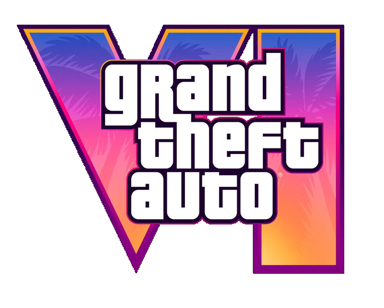
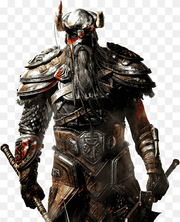
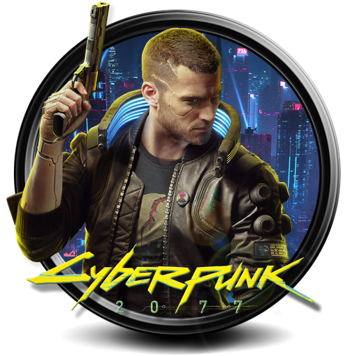
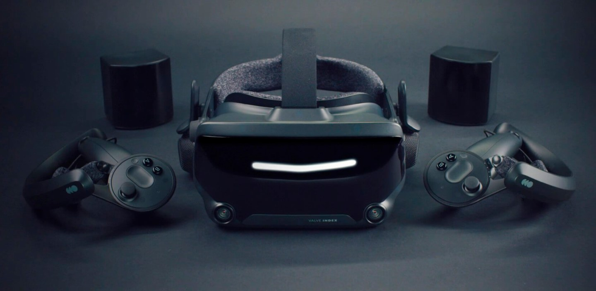

Головні новини відеоігор: останні події та важливі оновлення
Ласкаво просимо на сторінку "Новини", де ми розповідаємо про найважливіші події у світі відеоігор! Тут ви знайдете інформацію про нові релізи, оновлення, анонси, інтерв'ю з розробниками та багато іншого. Ми постійно стежимо за ігровою індустрією, щоб ви першими дізнавалися про всі зміни та інновації.
Головні новини цього місяця
| Прев'ю |
Джерело |
Короткий опис новини |
|  |
Деталі про GTA VI |
новий трейлер, перші геймплейні подробиці та дата виходу! |
|  |
Огляд TES VI |
Bethesda поділилась новими деталями про сюжет та карту The Elder Scrolls VI. |
|  |
Cyberpunk 2077 |
Майбутнє серії: офіційна заява CD Projekt Red. |
 |
AC Mirage – подробиці |
Ubisoft готує безкоштовне DLC для Assassin's Creed Mirage вже цього літа. |
Чутки та інсайди: що готує ігрова індустрія?
- Sony працює над новим IP для PlayStation 6?
Ходять чутки, що Sony вже почала розробку нової франшизи, яка стане флагманською для майбутньої PlayStation 6.
Інформація поки що обмежена, але інсайдери натякають на масштабний проєкт у жанрі sci-fi.
- Nintendo готує наступника Switch?
За останніми витоками інформації, нова консоль від Nintendo може отримати OLED-дисплей, підтримку 4K-графіки та потужніший процесор.
Чи буде це Switch 2 чи абсолютно новий пристрій? Дізнаємося найближчим часом!
- Blizzard повертається до серії StarCraft?
Після багатьох років мовчання, з'явилися натяки, що Blizzard працює над новою грою у всесвіті StarCraft. Це буде RTS чи щось абсолютно нове?
- Valve натякає на Half-Life 3
Після довгих років мовчання, у коді останніх оновлень Steam було знайдено згадки про "HL3". Чи отримаємо ми нарешті продовження легендарної серії?
Найбільші кіберспортивні турніри 2025 року
- The International 2025 (Dota 2)
Призовий фонд: $40 мільйонів
Локація: Сингапур
- CS2 Major 2025
Найкращі команди світу змагатимуться за титул чемпіона!
- Fortnite World Cup 2025
Очікуваний призовий фонд: $10 мільйонів
Цікаві факти зі світу відеоігор
- Найприбутковіша гра 2024 року – Minecraft, яка принесла понад 1,5 мільярда доларів!
- Перший в історії відеогейм – Tennis for Two, створений у 1958 році.
- No Man’s Sky колись вважалася провалом, але після оновлень стала однією з найкращих космічних ігор.
- В оригінальному Pac-Man не було кінця – гра триває, доки у вас є життя!
Valve не зупиняється на успіху Steam Deck і працює над новим пристроєм, що буде ще
потужнішим та функціональнішим.
Компанія обіцяє покращену продуктивність, довший час
автономної роботи та підтримку сучасних ігор.
Чи стане цей пристрій новим проривом у
світі портативного геймінгу?
Чекаємо на офіційні подробиці!

Компанія Warner Bros. Games розглядає розробку продовження популярної гри Hogwarts Legacy
як один із пріоритетних напрямів на найближчі роки.
За словами Гуннара Віденфельсрозповіва, створення сиквелу гри стане одним із головних завдань
компанії упродовж наступних кількох років.